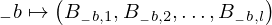
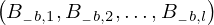
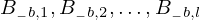

Common circuit_Bkl of type Qcircuit¶
from the theory of proveit.physics.quantum.circuits¶
In [1]:
import proveit
# Automation is not needed when only building an expression:
proveit.defaults.automation = False # This will speed things up.
proveit.defaults.inline_pngs = False # Makes files smaller.
%load_expr # Load the stored expression as 'stored_expr'
# import the special expression
from proveit.physics.quantum.circuits import circuit_Bkl
In [2]:
# check that the built expression is the same as the stored expression
assert circuit_Bkl == stored_expr
assert circuit_Bkl._style_id == stored_expr._style_id
print("Passed sanity check: circuit_Bkl matches stored_expr")
In [3]:
# Show the LaTeX representation of the expression for convenience if you need it.
print(stored_expr.latex())
In [4]:
stored_expr.style_options()
In [5]:
# display the expression information
stored_expr.expr_info()
| core type | sub-expressions | expression | |
|---|---|---|---|
| 0 | Operation | operator: 1 operands: 2 |  |
| 1 | Literal |  | |
| 2 | ExprTuple | 3 |  |
| 3 | ExprRange | lambda_map: 4 start_index: 10 end_index: 5 |  |
| 4 | Lambda | parameter: 16 body: 7 |  |
| 5 | Variable |  | |
| 6 | ExprTuple | 16 |  |
| 7 | ExprTuple | 8 |  |
| 8 | ExprRange | lambda_map: 9 start_index: 10 end_index: 11 |  |
| 9 | Lambda | parameter: 17 body: 13 |  |
| 10 | Literal |  | |
| 11 | Variable |  | |
| 12 | ExprTuple | 17 |  |
| 13 | IndexedVar | variable: 14 indices: 15 |  |
| 14 | Variable |  | |
| 15 | ExprTuple | 16, 17 |  |
| 16 | Variable |  | |
| 17 | Variable |  |